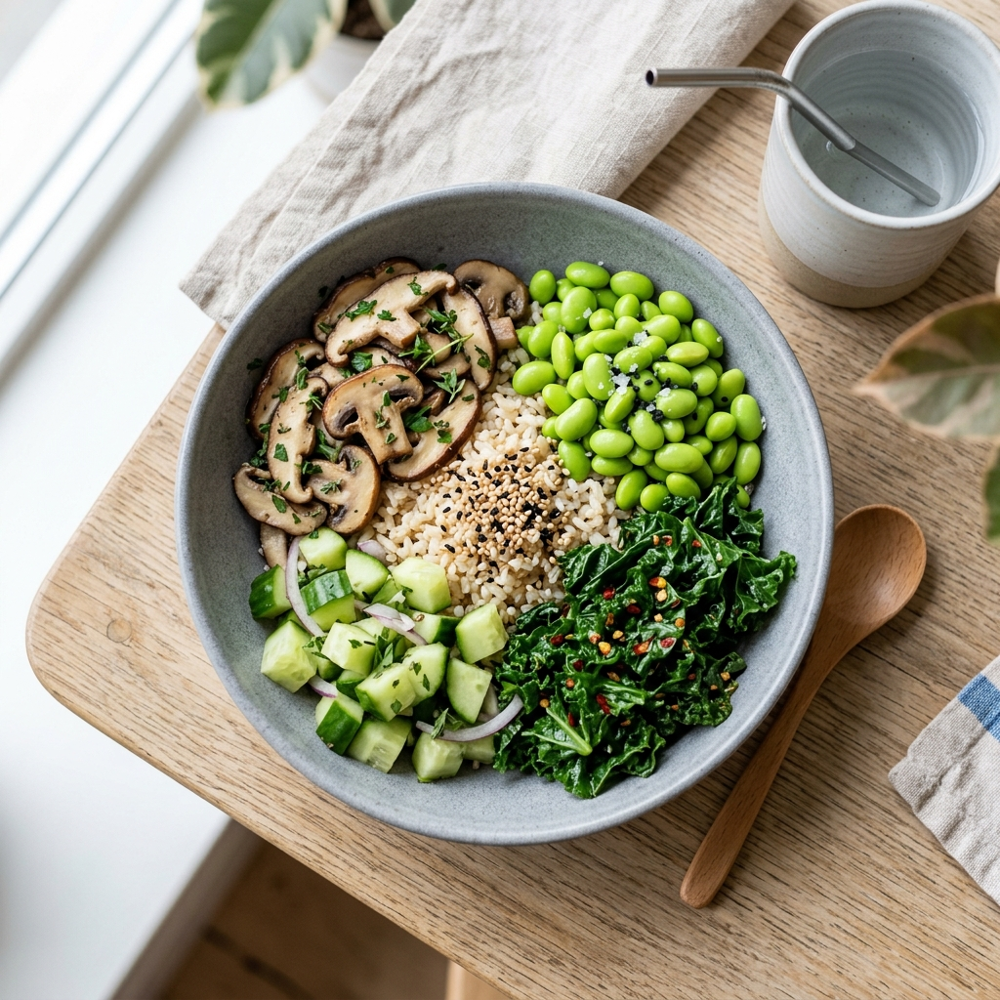
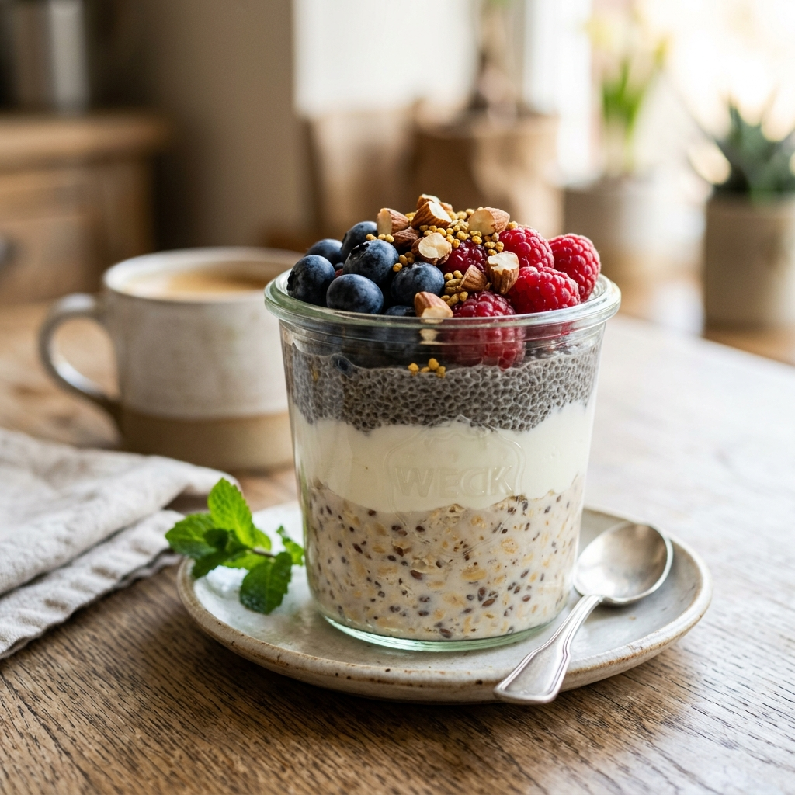

Successor Health Reference
June 2026 Diet Adaptation Guide
Move Past the Longevity Hype
We replace speculative ingredient folklore like "senolytics" and "autophagy clears" with clinical realities: high-satiety, vegetable-rich, low-sodium meals that support cardiometabolic health and weight management sustainably.
Interactive Plate Composition
Contrast the scientific Successor recommendation with standard or extreme restriction patterns.
Satiety & Portion Guide
Estimate your target portions for the three meals based on your daily energy needs.
Portion Scaling Recommendations:
*Values adapted dynamically to preserve macro ratios (50% vegetables, 25% protein, 25% starch) and target sodium limits.
Biochemical Mechanism Map
Evidence levels classification of the dietary claims, contrasting medical guidelines with speculative claims.
Satiety, Fiber & Salt
WHO/NHS backed focus on dietary fiber, sodium reduction, and unsaturated fats.
Click to expand detailsUltra-Processed Foods
2024 umbrella reviews linking UPF diets to adverse cardiometabolic effects.
Click to expand detailsMolecular Hype
Speculative claims regarding "senolytics", "autophagy", and anti-AGE longevity.
Click to expand detailsHigh Confidence Mechanisms (NHS, WHO, Heart Foundation Standards)
Mechanisms: Higher fiber intake improves gastric distension and satiety hormones. Saturated fat substitution with monounsaturated oils (like measured olive oil) improves blood lipid profile. Lowering sodium directly reduces systemic blood pressure.
Verifiable Evidence: Strong clinical trial consensus. Consistent evidence up to June 2026 showing cardioprotection, glycemic control, and weight maintenance via satiety, not ingredient magic.
Adapted Dinner Stew
Serves 4A cheap, high-volume batch stew built around lentils, sweet potato, and firm tofu. Focuses on moist, low-temp cooking to support portion-controlled dietary quality.
- 180g brown or green lentils, dry
- 300g firm tofu, cubed
- 300g sweet potato or potato, diced
- 400g cauliflower, florets
- 200g carrots, sliced
- 150g celery, sliced
- 150g onion, diced
- 4 cloves garlic, minced
- 2 tins tinned chopped tomatoes, no added salt (400g/tin)
- 150g spinach or kale
- 2 tbsp lower-sodium tamari or soy sauce
- 2 tbsp extra virgin olive oil
- 2 tbsp lemon juice or vinegar
- Spices (Cumin, paprika, black pepper, chili) to taste
- 1000ml water or low-salt stock
Evidence Review
- Lentils & Tofu: High-protein, high-fiber core provides high satiety, promoting spontaneous calorie reduction.
- Lower-Sodium Soy Sauce: Directly maps to NHS/WHO guidelines for blood pressure control (<5g salt/day).
- Moist Heat: Stewing avoids harsh frying and excessive browning, keeping diet clean and lowering AGEs (advanced glycation end-products) in a practical way.

Adapted Lunch Bowl
Serves 2A large volume, low energy density lunch. Preserves the original's "satiety sponge" concept but strips away overclaimed molecular additions like trehalose.
- 400g mushrooms, sliced
- 1 large cucumber, chopped
- 150g kale or mixed leafy greens
- 200g edamame, tofu, or chickpeas
- 1 tbsp olive or canola oil
- 2 tbsp apple cider vinegar or rice vinegar
- 1 tbsp lemon juice
- 2 tbsp nutritional yeast (optional savoury flavour)
- 1 tbsp sesame seeds
- Chili flakes, garlic, ginger to taste
- 1/2 cup cooked brown rice or quinoa per serving (Optional add-on for high activity)
Evidence Review
- Satiety Sponge: Cucumbers, greens, and mushrooms hold structural water, bulk-filling the stomach without caloric load.
- Removal of Trehalose: Done to align with WHO and NHS. Trehalose (a sugar) does not have proven clinically meaningful autophagy benefits in healthy humans.
- Balanced Protein: Adding edamame/chickpeas ensures the salad functions as a complete, balanced meal rather than just low-calorie plants.

Adapted Breakfast Parfait
Serves 2A fiber-packed, slow-digesting overnight breakfast. Offers two evidence-based dietary pathways: Satiety Oats default or a Lower-Carb seeds/nuts configuration.
Evidence Review
- Whole Oats: Contains beta-glucan soluble fiber, heavily supported by clinical trials for glucose regulation and LDL control.
- Nuts Caution: Rich in healthy fats, but energy-dense. The recipe strictly portions nuts (20-30g) to prevent accidental caloric overshoot.
- Soy/Dairy Yoghurt: Unsweetened yoghurts provide calcium and protein without free sugars, which WHO advises restricting.
Smart Sourcing Guide
Adelaide-localized shopping items. Budget mode toggle is active on Recipe Hub.
Staples & Cold Items
Fresh Produce
Dry Grains & Spices
Tofu & Seasonings
Prioritised Implementation Roadmap
A structured 12-week layout to slowly build habits, avoiding the friction of sudden restrictive diets.
Setup
Days 1-7Early Adoption
Weeks 2-4Consolidation
Weeks 5-8Optimisation
Weeks 9-12Phase 2: Early Adoption (Weeks 2–4)
Primary Actions: Repeat the three core recipes. Standardize your plate portions (half vegetables, quarter protein, quarter starch). Identify hunger points and comfort eating triggers to address them with low energy-density vegetable snacks.
Metrics & Goals: Focus on weight trends, meal compliance, and satiety ratings between meals. Do not worry about extreme restriction; adherence is key.
Health & Adherence Logger
Log your metrics locally to monitor cardiometabolic health and satiety levels over time.
Logged History
Stored locally in your browser. (Click Clear to reset data)
| Date | Weight | Waist | BP | Adherence | Satiety |
|---|---|---|---|---|---|
| No logs logged yet. Submit your first entry on the left! | |||||
Scientific Audit: Successor Modifications
Direct contrast of original overclaims vs. successor cardiometabolic corrections, with levels of clinical evidence.
| Topic | Original Position | Successor Corrected Position | Evidence Strength | Biochemical Rationale |
|---|---|---|---|---|
| Overall Frame | Longevity/anti-ageing through Blueprint & SENS ingredient rules | General adult weight-management & cardiometabolic-health pattern | Strong | Broad dietary quality (high fiber, low sodium, whole foods) is heavily backed by WHO/NHS/CDC clinical trial reviews; single-molecule longevity claims lack direct human proof. |
| Potatoes | Implicitly problematic for glycation | Acceptable in portion-controlled meals; prefer fiber-rich patterns | Moderate | Potatoes are a whole carbohydrate. They are not toxic; rather, portions should be managed within the 25% starch plate guideline. |
| Whole grains | Grain-free breakfast (contradicted by oats in recipe) | Oats and whole grains remain acceptable for most adults | Strong | Whole oats contain beta-glucans which improve glucose regulation and lipid profiles. Grain-free mandates are unsupported for general health. |
| Soy / Tofu | Accepted in one recipe but anti-soy framing elsewhere | Soy and tofu are acceptable as healthy protein options | Strong | Legumes and soy are clinical priorities for plant protein. High intakes correlate with lower blood pressure and cardiovascular benefits. |
| Gluten-free | Presented as healthier by default | Only indicated for coeliac disease or confirmed sensitivity | Strong | NHS guidelines indicate gluten avoidance is a medical treatment for coeliac disease, not a general public health longevity rule. |
| Dairy / Yoghurt | Treated suspiciously at points | Plain yoghurt or unsweetened soy yoghurt is healthy and acceptable | Strong | Standard low-fat/unsweetened yoghurts provide calcium and protein, helping satiety without introducing harmful free sugars. |
| Oils | Strong preference for premium oils, "raw only" | Measured use of unsaturated oils; avoid deep-frying | Strong | Replacing saturated fats with olive/canola oil is supported. However, they are energy-dense and must be measured (1-2 tbsp) to prevent calorie creep. |
| Sweeteners | Included trehalose; "natural" sweetener framing | Minimise sweeteners; WHO advises against non-sugar sweeteners for weight loss | Strong | WHO guidelines advise minimizing both free sugars and non-sugar sweeteners to control weight and avoid non-communicable diseases. |
| Salt / Soy Sauce | Lower-sodium choices mentioned but not centered | Sodium reduction upgraded as a primary recommendation | Strong | Reducing sodium to under 5g salt/day (approx. 2g sodium) is one of the highest-confidence, clinically-proven blood pressure control targets. |
| AGE Reduction | Central anti-ageing strategy | Secondary culinary consideration; not a clinical aging lever | Limited | While lower-temperature, moist cooking is good practice, direct clinical proof that reducing dietary AGEs slows human biological aging remains unproven. |
| Ultra-processed foods | Implicitly criticised | Explicitly minimize reliance on them | Moderate | 2024 umbrella reviews and a 2025 controlled trial show that high UPF intake causes rapid adverse cardiometabolic effects even in calorie-matched conditions. |